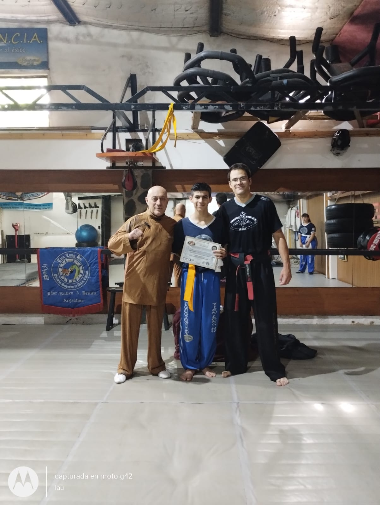
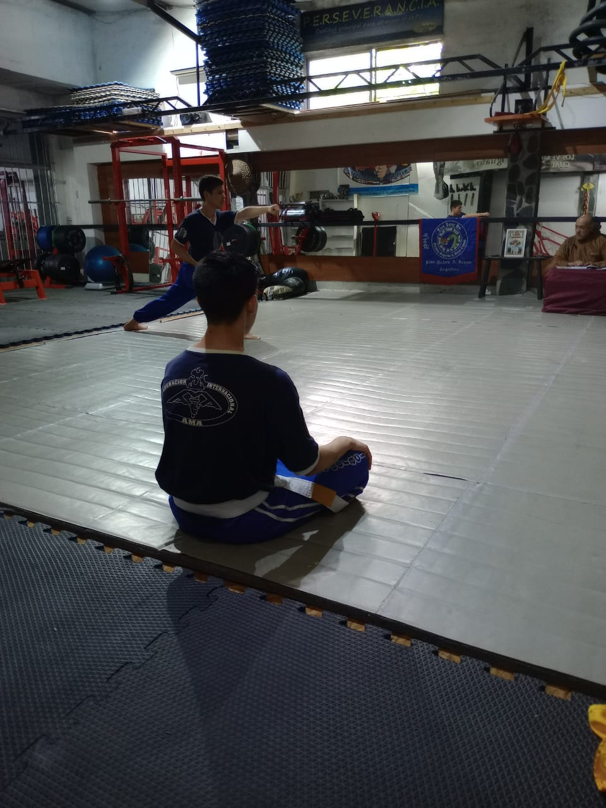
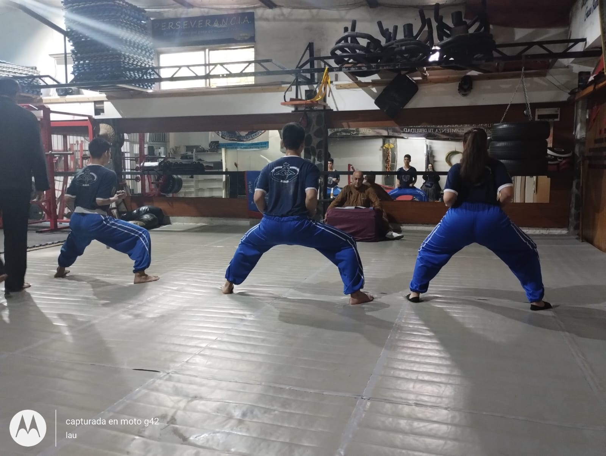
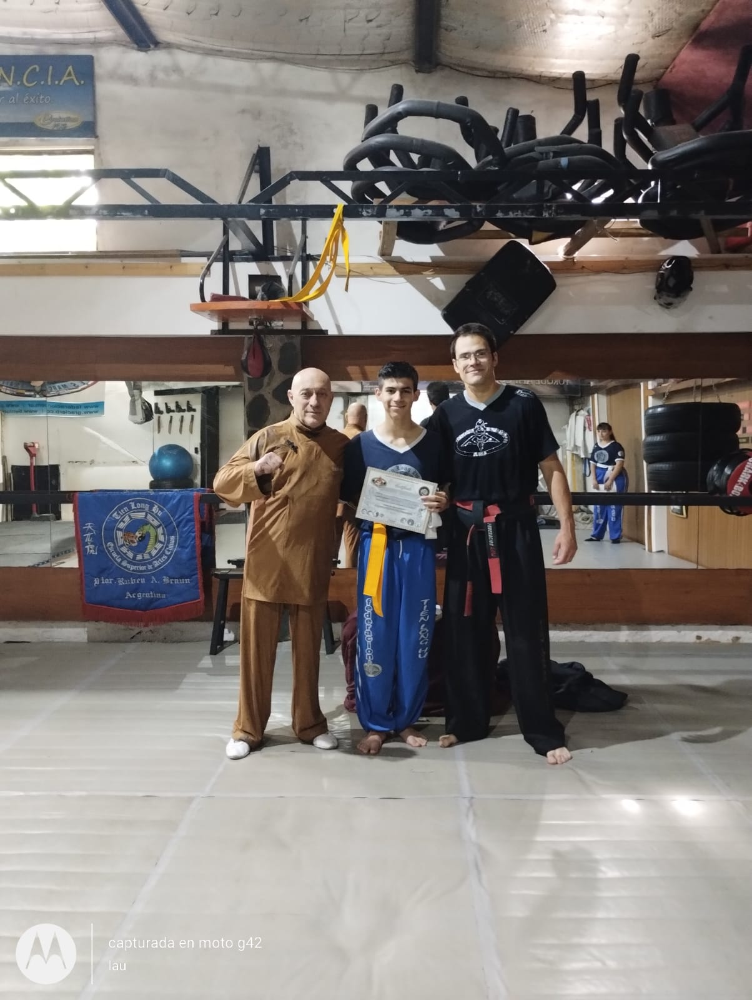
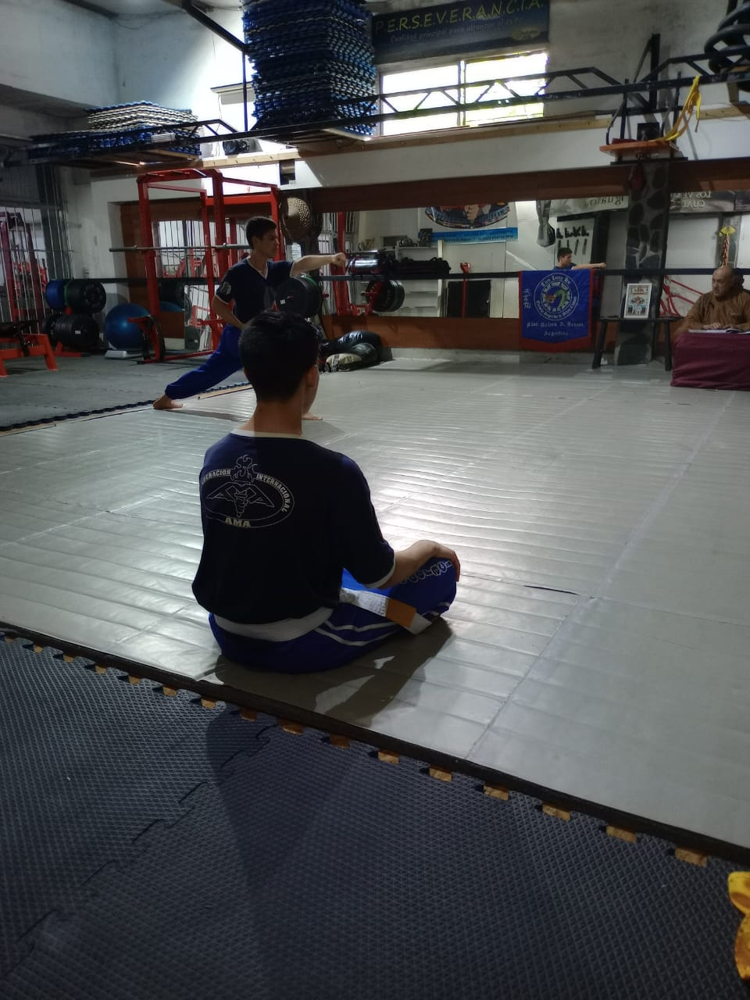
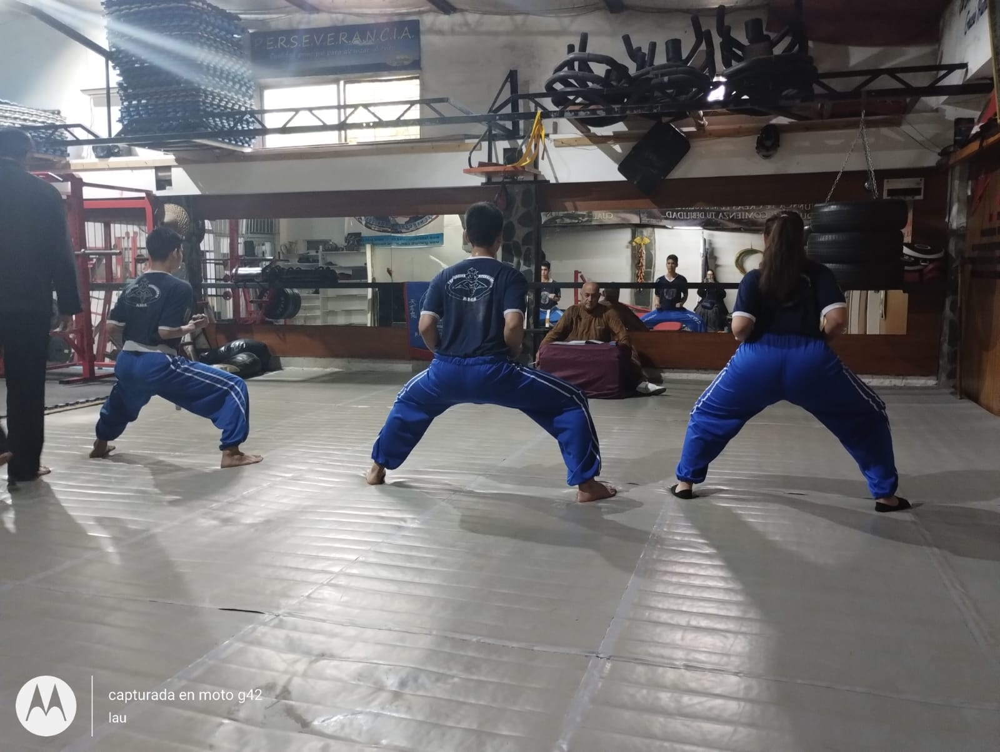

"Aprende a defenderte antes que lo necesites"
Maxima escuela superior de artes marciales chinas. Fundada en el año 1987 por el Maestro Ruben braun, quien desde entonces ha dedicado su vida a enseñar y promover las artes marciales chinas en todo su esplendor. La Máxima Escuela Superior de Artes Marciales Chinas se ha convertido en un referente internacional en la enseñanza y difusión de estas disciplinas milenarias. Con un enfoque holístico que va más allá del mero entrenamiento físico, la escuela se enorgullece de transmitir los valores tradicionales de respeto, disciplina y perseverancia. A lo largo de los años, ha formado a numerosos campeones y practicantes destacados, quienes han llevado el legado de la escuela a lo más alto en competiciones nacionales e internacionales. La visión del Maestro Rubén Braun continúa inspirando a generaciones de estudiantes, guiándolos hacia el camino del autodescubrimiento y la excelencia en las artes marciales chinas
 







PROXIMAMENTE EN 2024
- Torneo copa Quilmes en su 12va edición
- Seminario de Dan Dao olimpico
- Examen de profesores - revalidaciones
- Torneo interno de nuestra escuela
- Apertura de nueva sede en Bernal
- Visita del maestro Monje guerrero Shi Shan Long
- Curso de RCP para profesores e instructores
- Jornada de entrenamiento de formas con armas
- Curso de arbitraje y juez de boxeo
- Seminario de SAN DA
- Visita del maestro Daniel Braun
- Seminario de defensal personal
- Curso de manejo de armas cortas
- Examen de alumnos kyu a y kyu b